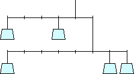
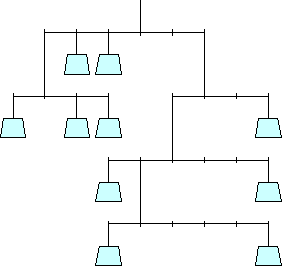
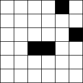
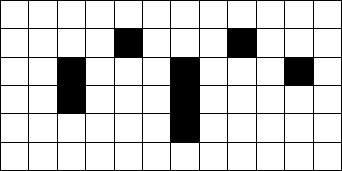
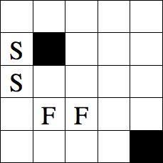
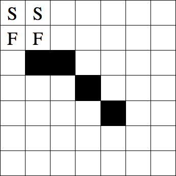
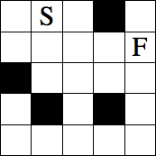
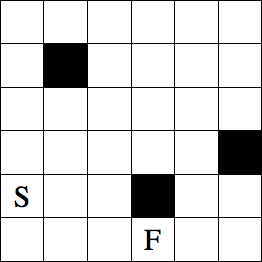

1.-2. Balancing Act
The weights in the following puzzles have whole number weights, 1 to 5 in the first puzzle and 1 to 10 in the second puzzle. Determine which weights must be placed in the places shown so that there is equal torque on both sides of every horizontal bar. The torque of each weight can be calculated by multiplying its weight by the distance from the fulcrum. Assume that the weights of the horizontal bars and vertical strings are negligible.
| 1.  | 2.  |
Start at a white square, and draw a path that moves horizontally, and vertically and passes through each white square exactly once. At each stage the path should go as far as possible, only changing direction when it hits the edge of the grid, a black square, or another square already visited by the path.
| 3.  | 4.  |
In these mazes, a 2×2×1 block that starts on the two squares marked S needs to be rolled to the two squares marked F. The block is always rolled up (U), down (D), left (L), or right (R) over one of the four edges that touches the ground, so that either a 2×1 face or a 2×2 face of the block lays on the paper. The block is not allowed to leave the grid or lay on a black square.
| 5.  | 6.  |
These are similar to the previous rolling block mazes, but the block in puzzle 7 is 2×1×1, and the bock in puzzle 8 is 3×1×1.
| 7.  | 8.  |